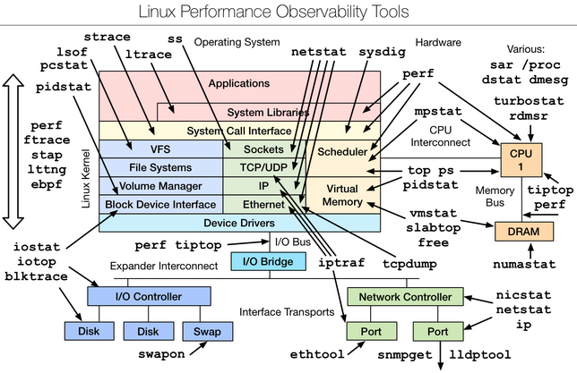

DevOps / Sys Admin Q & A #9 : Linux System / Application Monitoring, Performance Tuning, Profiling Methods & Tools
Measure twice, cut once!
This article is based on:

- uptime
- top
- ps
- vmstat - virtual memory statistics
- iostat - block I/O disk utilization
- mpstat - multi-processor statistics
- free
- sar - system activity report
- strace
- dmesg
We can get the load average from commands like top or uptime.
If load > # of CPUs, it may mean CPU saturation.
k@laptop:~$ uptime 16:48:25 up 32 min, 2 users, load average: 0.58, 1.13, 2.46
From left to right, these numbers show us the average load over the last 1 minute, the last 5 minutes, and the last 15 minutes. In other words, the above output indicates:
load average over the last 1 minute: 0.58 load average over the last 5 minutes: 1.13 load average over the last 15 minutes: 2.46
Assuming 1 cpu machine, it means:
load average over the last 1 minute: 0.58 => The CPU idled for 42% of the time load average over the last 5 minutes: 1.13 => .13 processes were waiting for the CPU load average over the last 15 minutes: 2.46 => On average, 1.46 processes were waiting for the CPU
Actually, if the machine has 2 CPUs, then it would mean:
load average over the last 1 minute: 0.58 => The CPU idled for 142% of the time load average over the last 5 minutes: 1.13 => .87 processes were waiting for the CPU load average over the last 15 minutes: 2.46 => On average, 0.46 processes were waiting for the CPU
When we use top to diagnose load, the basic steps are to examine the top output to identify what resources we are running out of (CPU, RAM, disk I/O). Once we have figured that out, we can try to identify what processes are consuming those resources the most.
%CPU is summed across all CPUs
Can miss short-lived processes (atop won't)
This section is a compiled work from the following sources:
The top program provides a dynamic real-time view of a running system. It can display system summary information, as well as a list of processes or threads currently being managed by the kernel.
Descriptions for the top display:
%Cpu(s): 10.7 us, 2.9 sy, 0.0 ni, 85.7 id, 0.5 wa, 0.0 hi, 0.2 si, 0.0 st
This line shows CPU state percentages based on the interval since the last refresh.
- us, user user cpu time (or) % CPU time spent in user space, time running un-niced user processes.
Shells, compilers, databases, web servers, and the programs associated with the desktop are all user space processes. If the processor isn't idle, it is quite normal that the majority of the CPU time should be spent running user space processes. - sy, system system cpu time (or) % CPU time spent in kernel space. This is the amount of time that the CPU spent running the kernel. All the processes and system resources are handled by the Linux kernel. When a user space process needs something from the system, for example when it needs to allocate memory, perform some I/O, or it needs to create a child process, then the kernel is running. In fact the scheduler itself which determines which process runs next is part of the kernel. The amount of time spent in the kernel should be as low as possible. In this case, just 2.9% of the time given to the different processes was spent in the kernel. This number can peak much higher, especially when there is a lot of I/O happening.
- ni, nice time running niced user processes.
Niceness is a way to tweak the priority level of a process so that it runs less frequently. The niceness level ranges from -20 (most favorable scheduling) to 19 (least favorable). By default processes on Linux are started with a niceness of 0.
A "niced" process is one with a positive nice value. So if the processor's nice value is high, that means it is working with some low priority processes. So this indicator is useful when we see high CPU utilization and we are afraid that this high load will have bad effect on our system:- High CPU utilization with high nice value: Nothing to worry, not so important tasks doing there job, important processes will easily get CPU time if they need. This situation is not a real bottleneck.
- High CPU utilization with low nice value: Something to worry because the CPU is stressed with important processes so these or new processes will have to wait. This situation is a real bottleneck.
- id, idle time spent in the kernel idle handler.
The id statistic tell us that the processor was idle just over 85.7% of the time during the last sampling period. The total of the user space percentage - us, the niced percentage - ni, and the idle percentage - id, should be close to 100%. Which it is in this case. If the CPU is spending a more time in the other states then something is probably wrong, and may need trouble shooting. - wa, IO-wait time waiting for I/O completion.
I/O operations are slow compared to the speed of a CPU. There are times when the processor has initiated a read or write operation and then it has to wait for the result, but has nothing else to do. In other words it is idle while waiting for an I/O operation to complete. The time the CPU spends in this state is shown by the 'wa' statistic.
'wa' is the measure of time over a given period that a CPU spent idle because all runnable tasks were waiting for a IO operation to be fulfilled. - hi time spent servicing hardware interrupts.
This is the time spent processing hardware interrupts. Hardware interrupts are generated by hardware devices (network cards, keyboard controller, external timer, hardware senors, etc.) when they need to signal something to the CPU (data has arrived for example). Since these can happen very frequently, and since they essentially block the current CPU while they are running, kernel hardware interrupt handlers are written to be as fast and simple as possible.
On a system where no processes have been niced then the number will be 0.
Hardware interrupts are physical interrupts sent to the CPU from various peripherals like disks and network interfaces. Software interrupts come from processes running on the system. A hardware interrupt will actually cause the CPU to stop what it is doing and go handle the interrupt. A software interrupt doesn't occur at the CPU level, but rather at the kernel level. - si time spent servicing software interrupts.
This represents the time spent in softirqs. - st time stolen from this vm by the hypervisor.
This represents "steal time", and it is only relevant in virtualized environments. It represents time when the real CPU was not available to the current virtual machine - it was "stolen" from that VM by the hypervisor (either to run another VM, or for its own needs).
This number tells how long the virtual CPU has spent waiting for the hypervisor to service another virtual CPU running on a different virtual machine. Since in the real-world these virtual processors are sharing the same physical processor(s) then there will be times when the virtual machine wanted to run but the hypervisor scheduled another virtual machine instead.
Here are some of the trouble shootings:
- High user mode CPU usage - If a system suddenly jumps from having spare CPU cycles to running flat out high, then the first thing to check is the amount of time the CPU spends running user space processes. If this is high, then it probably means that a process has gone crazy and is eating up all the CPU time.
Using the top command we will be able to see which process is to blame and restart the service or kill the process. - High kernel CPU usage - Sometimes this is acceptable. For example, a program that does lots of console I/O can cause the kernel usage to spike. However if it remains higher for long periods of time, then it could be an indication that something isn't right.
A possible cause of such spikes could be a problem with a driver/kernel module. - High niced value CPU usage - If the amount of time the CPU is spending running processes with a niced priority value jumps, then it means that someone has started some intensive CPU jobs on the system, but they have niced the task.
If the niceness level is greater than zero, then the user has been courteous enough lower to the priority of the process and therefore avoid a CPU overload. There is probably little that needs to be done in this case, other than maybe find out who has started the process.
But if the niceness level is less than 0, then we will need to investigate what is happening and who is responsible, as such a task could easily cripple the responsiveness of the system.
- High waiting on I/O This means that there are some intensive I/O tasks running on the system that don't use up much CPU time. If this number is high for anything other than short bursts, then it means that either the I/O performed by the task is very inefficient, or the data is being transferred to a very slow device, or there is a potential problem with a hard disk that is taking a long time to process reads & writes.
- High interrupt processing This could be an indication of a broken peripheral that is causing lots of hardware interrupts or of a process that is issuing lots of software interrupts.
- Large stolen time Basically, this means that the host system running the hypervisor is too busy. If possible, check the other virtual machines running on the hypervisor, and/or migrate our virtual machine to another host.
When we have a slow server, one of the first values we should look at is I/O wait so we can rule out disk I/O. If I/O wait is low, then we can look at the idle percentage. If I/O wait is high, then the next step is to diagnose what is causing high disk I/O.
If I/O wait and idle times are low, then we will likely see a high user time percentage, so we must diagnose what is causing high user time. If the I/O wait is low and the idle percentage is high, we then know any sluggishness is not because of CPU resources, and we will have to start troubleshooting elsewhere.
This might mean looking for network problems, or in the case of a web server, looking at slow queries to MySQL, for instance.
$ ps -ef f ... root 979 1 0 Nov12 ? Ss 0:03 /lib/systemd/systemd-logind avahi 990 1 0 Nov12 ? S 0:03 avahi-daemon: running [laptop.local] avahi 992 990 0 Nov12 ? S 0:00 \_ avahi-daemon: chroot helper root 1035 1 0 Nov12 ? Ssl 0:42 NetworkManager nobody 1556 1035 0 Nov12 ? S 0:21 \_ /usr/sbin/dnsmasq --no-resolv --keep-in-foreground --no-hosts --bind-interfa root 30549 1035 0 Nov13 ? S 0:00 \_ /sbin/dhclient -d -sf /usr/lib/NetworkManager/nm-dhcp-client.action -pf /run root 1049 1 0 Nov12 ? Sl 0:03 /usr/lib/policykit-1/polkitd --no-debug root 1051 1 0 Nov12 tty4 Ss+ 0:00 /sbin/getty -8 38400 tty4 ...
Note that we added "f" which displays ASCII art process hierarchy (forest).
To get the top 5 cpu eating process:
$ ps -eo pcpu,pid,user | sort -k1 -r | head -6 %CPU PID USER COMMAND 5.8 3444 k /opt/google/chrome/chrome 3.1 27831 k /opt/google/chrome/chrome --type=renderer ... 2.5 982 root /usr/lib/xorg/Xorg -core :0 -seat seat0 ... 2.5 3544 k /opt/google/chrome/chrome --type=gpu-process ... 22.9 3645 k /opt/google/chrome/chrome --type=renderer -- ...
Note that we used 'r' for 'sort' to reverse, and '6' for 'head' to include the column labels.
The vmstat tool provides information about memory, swap utilization, IO wait, and system activity. It is particularly useful for diagnosing I/O-related issues.
Usage : vmstat [interval [count]]
vmstat 1 20
This runs a vmstat every second(1), twenty times(20). This gives a pretty good sample of the current state of the system. The output generated should look like the following:
$ vmstat 1 5 procs -----------memory---------- ---swap-- -----io---- -system-- ------cpu----- r b swpd free buff cache si so bi bo in cs us sy id wa st 0 0 1346096 220912 19284 303804 21 18 95 65 61 142 35 8 55 1 0 1 0 1346096 220940 19284 303804 0 0 0 0 785 1612 15 3 82 0 0 1 0 1346092 220908 19292 303808 0 0 0 56 876 1715 11 4 84 2 0 2 0 1346092 220908 19292 303808 0 0 0 0 678 1355 10 3 88 0 0 1 0 1346092 220940 19292 303808 0 0 0 0 761 1568 14 5 81 0 0
The first output line has some summary since boot values.
The first column, r is runnable tasks.
The memory and swap columns provide the same kind of information provided by the free -m command, though in a slightly more difficult to comprehend format. The most salient information produced by this command is the wa column, which is the final column in most implementations. This field displays the amount of time the CPU spends waiting for IO operations to complete.
If this number is consistently and considerably higher than 0, we might consider taking measures to address the IO usage.
- Procs:
r: The number of processes waiting for run time.
b: The number of processes in uninterruptible sleep.
- Memory
swpd: the amount of virtual memory used.
free: the amount of idle memory.
buff: the amount of memory used as buffers.
cache: the amount of memory used as cache.
inact: the amount of inactive memory. (-a option)
active: the amount of active memory. (-a option)
- Swap
si: Amount of memory swapped in from disk (/s).
so: Amount of memory swapped to disk (/s).
- IO
bi: Blocks received from a block device (blocks/s).
bo: Blocks sent to a block device (blocks/s).
- System
in: The number of interrupts per second, including the clock.
cs: The number of context switches per second.
- CPU
These are percentages of total CPU time.
us: Time spent running non-kernel code. (user time, including nice time).
sy: Time spent running kernel code. (system time).
id: Time spent idle. Prior to Linux 2.5.41, this includes IO-wait time.
wa: Time spent waiting for IO. Prior to Linux 2.5.41, included in idle.
st: Time stolen from a virtual machine. Prior to Linux 2.6.11, unknown.
For more on vmstat, please visit Linux Performance Measurements using vmstat
To monitor disk read/write rates of individual disks, we can use iostat. This tool allows us to monitor I/O statistics for each device or partition. Using iostat command, we can find out disk utilization and monitor system input/output device loading by observing the time the physical disks are active in relation to their average transfer rates.
To use this tool, we need to run sysstat package.
To install sysstat on Ubuntu or Debian:
$ sudo apt-get install sysstat
Syntax for disk utilization report looks like this:
iostat -d -x interval count
where:
- -d : Display the device utilization report (d == disk)
- -x : Display extended statistics including disk utilization
- interval : It is time period in seconds between two samples. iostat 2 will give data at each 2 seconds interval.
- count : It is the number of times the data is needed. iostat 2 5 will give data at 2 seconds interval 5 times.
$ iostat -d -x 5 3 Linux 3.13.0-40-generic (laptop) 10/14/2015 _x86_64_ (2 CPU) Device: rrqm/s wrqm/s r/s w/s rkB/s wkB/s avgrq-sz avgqu-sz await r_await w_await svctm %util sda 1.75 4.78 6.15 2.13 104.99 45.86 36.45 0.27 32.58 22.74 61.06 3.03 2.51 Device: rrqm/s wrqm/s r/s w/s rkB/s wkB/s avgrq-sz avgqu-sz await r_await w_await svctm %util sda 0.00 5.20 0.00 7.80 0.00 80.00 20.51 0.14 17.74 0.00 17.74 12.41 9.68 Device: rrqm/s wrqm/s r/s w/s rkB/s wkB/s avgrq-sz avgqu-sz await r_await w_await svctm %util sda 4.20 4.40 0.80 2.80 20.00 47.20 37.33 0.11 31.11 76.00 18.29 31.11 11.20
The following values from the iostat output are the major ones:
- r/s : The number of read requests per second. See if a hard disk reports consistently high reads
- w/s : The number of write requests per second. See if a hard disk reports consistently high writes
- svctm : The average service time (in milliseconds) for I/O requests that were issued to the device.
- %util : Percentage of CPU time during which I/O requests were issued to the device (bandwidth utilization for the device). Device saturation occurs when this value is close to 100%.
We may want to look for unbalanced workloads, hot CPUs:
$ mpstat -P ALL 1 Linux 3.13.0-40-generic (laptop) 11/14/2015 _x86_64_ (2 CPU) 12:28:05 AM CPU %usr %nice %sys %iowait %irq %soft %steal %guest %gnice %idle 12:28:06 AM all 16.49 0.00 6.19 0.00 0.00 0.00 0.00 0.00 0.00 77.32 12:28:06 AM 0 16.67 0.00 6.25 0.00 0.00 0.00 0.00 0.00 0.00 77.08 12:28:06 AM 1 16.16 0.00 7.07 0.00 0.00 0.00 0.00 0.00 0.00 76.77 12:28:06 AM CPU %usr %nice %sys %iowait %irq %soft %steal %guest %gnice %idle 12:28:07 AM all 22.96 0.00 7.65 1.02 0.00 0.00 0.00 0.00 0.00 68.37 12:28:07 AM 0 21.65 0.00 7.22 2.06 0.00 0.00 0.00 0.00 0.00 69.07 12:28:07 AM 1 25.00 0.00 8.00 1.00 0.00 0.00 0.00 0.00 0.00 66.00
$ free -m
total used free shared buffers cached
Mem: 3545 3424 120 118 1 234
-/+ buffers/cache: 3188 357
Swap: 3681 1309 2372
The m option displays all data in MBs. The total 3545 MB is the total amount of RAM installed on the system, that is 3.5GB. The used column shows the amount of RAM that has been used by linux, in this case around 3.4 GB. The output is pretty self explanatory. Notable columns are the cached and buffers columns. The second line tells that 0.3 GB is free. This is the free memory in first line added with the buffers and cached amount of memory.
The last line is the swap memory, which in this case is 2.3GB free.
sar -P ALL 1 2 displays real time CPU usage for ALL cores every 1 second for 2 times (broken down by all cores).
$ sar -P ALL 1 2 Linux 3.13.0-40-generic (laptop) 11/14/2015 _x86_64_ (2 CPU) 08:34:18 AM CPU %user %nice %system %iowait %steal %idle 08:34:19 AM all 2.58 0.00 1.03 0.00 0.00 96.39 08:34:19 AM 0 3.09 0.00 1.03 0.00 0.00 95.88 08:34:19 AM 1 2.04 0.00 1.02 0.00 0.00 96.94 08:34:19 AM CPU %user %nice %system %iowait %steal %idle 08:34:20 AM all 4.57 0.00 2.54 0.00 0.00 92.89 08:34:20 AM 0 4.08 0.00 2.04 0.00 0.00 93.88 08:34:20 AM 1 5.10 0.00 3.06 0.00 0.00 91.84 Average: CPU %user %nice %system %iowait %steal %idle Average: all 3.58 0.00 1.79 0.00 0.00 94.63 Average: 0 3.59 0.00 1.54 0.00 0.00 94.87 Average: 1 3.57 0.00 2.04 0.00 0.00 94.39
sar -P 1 1 2 displays real time CPU usage for core number 1, every 1 second for 2 times.
$ sar -P 1 1 2 Linux 3.13.0-40-generic (laptop) 11/14/2015 _x86_64_ (2 CPU) 08:35:45 AM CPU %user %nice %system %iowait %steal %idle 08:35:46 AM 1 2.06 0.00 1.03 0.00 0.00 96.91 08:35:47 AM 1 5.10 0.00 3.06 0.00 0.00 91.84 Average: 1 3.59 0.00 2.05 0.00 0.00 94.36
sar -n DEV 1 1 displays network devices vital statistics for eth0, eth1, etc. every 1 second for 1 times.
$ sar -n DEV 1 1 Linux 3.13.0-40-generic (laptop) 11/14/2015 _x86_64_ (2 CPU) 08:38:43 AM IFACE rxpck/s txpck/s rxkB/s txkB/s rxcmp/s txcmp/s rxmcst/s %ifutil 08:38:44 AM vmnet8 0.00 0.00 0.00 0.00 0.00 0.00 0.00 0.00 08:38:44 AM eth0 0.00 0.00 0.00 0.00 0.00 0.00 0.00 0.00 08:38:44 AM lo 0.00 0.00 0.00 0.00 0.00 0.00 0.00 0.00 08:38:44 AM lxcbr0 0.00 0.00 0.00 0.00 0.00 0.00 0.00 0.00 08:38:44 AM wlan0 22.00 1.00 3.17 0.20 0.00 0.00 0.00 0.00 08:38:44 AM vmnet1 0.00 0.00 0.00 0.00 0.00 0.00 0.00 0.00 08:38:44 AM docker0 0.00 0.00 0.00 0.00 0.00 0.00 0.00 0.00 Average: IFACE rxpck/s txpck/s rxkB/s txkB/s rxcmp/s txcmp/s rxmcst/s %ifutil Average: vmnet8 0.00 0.00 0.00 0.00 0.00 0.00 0.00 0.00 Average: eth0 0.00 0.00 0.00 0.00 0.00 0.00 0.00 0.00 Average: lo 0.00 0.00 0.00 0.00 0.00 0.00 0.00 0.00 Average: lxcbr0 0.00 0.00 0.00 0.00 0.00 0.00 0.00 0.00 Average: wlan0 22.00 1.00 3.17 0.20 0.00 0.00 0.00 0.00 Average: vmnet1 0.00 0.00 0.00 0.00 0.00 0.00 0.00 0.00 Average: docker0 0.00 0.00 0.00 0.00 0.00 0.00 0.00 0.00
The strace is the tool that helps in debugging issues by tracing system calls executed by a program.
Here are the samples of strace command:
# Slow the target command and print details for each syscall: strace command # Slow the target PID and print details for each syscall: strace -p PID # Slow the target PID and any newly created child process, printing syscall details: strace -fp PID # Slow the target PID and record syscalls, printing a summary: strace -cp PID # Slow the target PID and trace open() syscalls only: strace -eopen -p PID # Slow the target PID and trace open() and stat() syscalls only: strace -eopen,stat -p PID # Slow the target PID and trace connect() and accept() syscalls only: strace -econnect,accept -p PID # Slow the target command and see what other programs it launches (slow them too!): strace -qfeexecve command # Slow the target PID and print time-since-epoch with (distorted) microsecond resolution: strace -ttt -p PID # Slow the target PID and print syscall durations with (distorted) microsecond resolution: strace -T -p PID
The strace command allows us to trace the system calls made by a program. This is useful for debugging, or simply to find out what a program is doing. By default, strace writes its output to stderr, but we can change this using the -o filename option - from The Linux Programming Interface.
$ strace date
execve("/bin/date", ["date"], [/* 118 vars */]) = 0
brk(0) = 0x18b5000
access("/etc/ld.so.nohwcap", F_OK) = -1 ENOENT (No such file or directory)
mmap(NULL, 8192, PROT_READ|PROT_WRITE, MAP_PRIVATE|MAP_ANONYMOUS, -1, 0) = 0x7f809a459000
access("/etc/ld.so.preload", R_OK) = -1 ENOENT (No such file or directory)
open("/etc/ld.so.cache", O_RDONLY|O_CLOEXEC) = 3
fstat(3, {st_mode=S_IFREG|0644, st_size=154081, ...}) = 0
...
close(1) = 0
munmap(0x7f809a458000, 4096) = 0
close(2) = 0
exit_group(0) = ?
+++ exited with 0 +++
Each system call is displayed in the form of a function call, with both input and out- put arguments shown in parentheses.
After the closing parenthesis of the traced call, strace prints an equal sign ( = ), fol- lowed by the return value of the system call. If the system call failed, the symbolic errno value is also displayed. Thus, we see ENOENT displayed for the failure of the access() call above.
Even for a simple program, the output produced by strace is made voluminous by the system calls executed by the C run-time startup code and the loading of shared libraries. For a complex program, the strace output can be extremely long.
For these reasons, it is sometimes useful to selectively filter the output of strace.
$ strace date 2>&1 | grep open
open("/etc/ld.so.cache", O_RDONLY|O_CLOEXEC) = 3
open("/lib/x86_64-linux-gnu/libc.so.6", O_RDONLY|O_CLOEXEC) = 3
open("/usr/lib/locale/locale-archive", O_RDONLY|O_CLOEXEC) = 3
open("/etc/localtime", O_RDONLY|O_CLOEXEC) = 3
Another method is to use the -e option to select the events to be traced. For example, we can use the following command to trace open() and close() system calls:
$ strace -e trace=open,close date
open("/etc/ld.so.cache", O_RDONLY|O_CLOEXEC) = 3
close(3) = 0
open("/lib/x86_64-linux-gnu/libc.so.6", O_RDONLY|O_CLOEXEC) = 3
close(3) = 0
open("/usr/lib/locale/locale-archive", O_RDONLY|O_CLOEXEC) = 3
close(3) = 0
open("/etc/localtime", O_RDONLY|O_CLOEXEC) = 3
close(3) = 0
Sun Nov 29 14:40:08 PST 2015
close(1) = 0
close(2) = 0
+++ exited with 0 +++
The dmesg command displays all messages from the kernel ring buffer which is a data structure that records messages related to the operation of the kernel. A ring buffer is a special kind of buffer that is always a constant size, removing the oldest messages when new messages come in.
We can use dmesg command to check why a process was killed. That happens if the process was consuming too much memory, and the kernel "Out of Memory" (OOM) killer will automatically kill the offending process.
$ dmesg | less [ 54.125380] Out of memory: Kill process 8320 (stress-ng-brk) score 324 or sacrifice child [ 54.125382] Killed process 8320 (stress-ng-brk) total-vm:1309660kB, anon-rss:1287796kB, file-rss:76kB [ 54.522906] gmain invoked oom-killer: gfp_mask=0x24201ca, order=0, oom_score_adj=0 [ 54.522908] gmain cpuset=accounts-daemon.service mems_allowed=0 ...
DevOps
DevOps / Sys Admin Q & A
Linux - system, cmds & shell programming
- Linux Tips - links, vmstats, rsync
- Linux Tips 2 - ctrl a, curl r, tail -f, umask
- Linux - bash I
- Linux - bash II
- Linux - Uncompressing 7z file
- Linux - sed I (substitution: sed 's///', sed -i)
- Linux - sed II (file spacing, numbering, text conversion and substitution)
- Linux - sed III (selective printing of certain lines, selective definition of certain lines)
- Linux - 7 File types : Regular, Directory, Block file, Character device file, Pipe file, Symbolic link file, and Socket file
- Linux shell programming - introduction
- Linux shell programming - variables (readonly, unset)
- Linux shell programming - special shell variables
- Linux shell programming : arrays - three different ways of declaring arrays & looping with $*/$@
- Linux shell programming : operations on array
- Linux shell programming : variables & commands substitution
- Linux shell programming : metacharacters & quotes
- Linux shell programming : input/output redirection & here document
- Linux shell programming : loop control - for, while, break, and break n
- Linux shell programming : for-loop
- Linux shell programming : if/elif/else/fi
- Managing User Account - useradd, usermod, and userdel
- Linux Secure Shell (SSH) I : key generation, private key and public key
- Linux Secure Shell (SSH) II : ssh-agent & scp
- Linux Secure Shell (SSH) III : SSH Tunnel as Proxy - Dynamic Port Forwarding (SOCKS Proxy)
- Linux Secure Shell (SSH) IV : Local port forwarding (outgoing ssh tunnel)
- Linux Secure Shell (SSH) V : Reverse SSH Tunnel (remote port forwarding / incoming ssh tunnel) /)
- Linux Processes and Signals
- Linux Drivers 1
- tcpdump
- Linux Debugging using gdb
- Embedded Systems Programming I - Introduction
- Embedded Systems Programming II - gcc ARM Toolchain and Simple Code on Ubuntu/Fedora
- LXC (Linux Container) Install and Run
- Hadoop - 1. Setting up on Ubuntu for Single-Node Cluster
- Hadoop - 2. Runing on Ubuntu for Single-Node Cluster
- ownCloud 7 install
- Ubuntu 14.04 guest on Mac OSX host using VirtualBox I
- Ubuntu 14.04 guest on Mac OSX host using VirtualBox II
- Windows 8 guest on Mac OSX host using VirtualBox I
- Ubuntu Package Management System (apt-get vs dpkg)
- How to Make a Self-Signed SSL Certificate
- DevOps / Sys Admin interview questions
Ph.D. / Golden Gate Ave, San Francisco / Seoul National Univ / Carnegie Mellon / UC Berkeley / DevOps / Deep Learning / Visualization